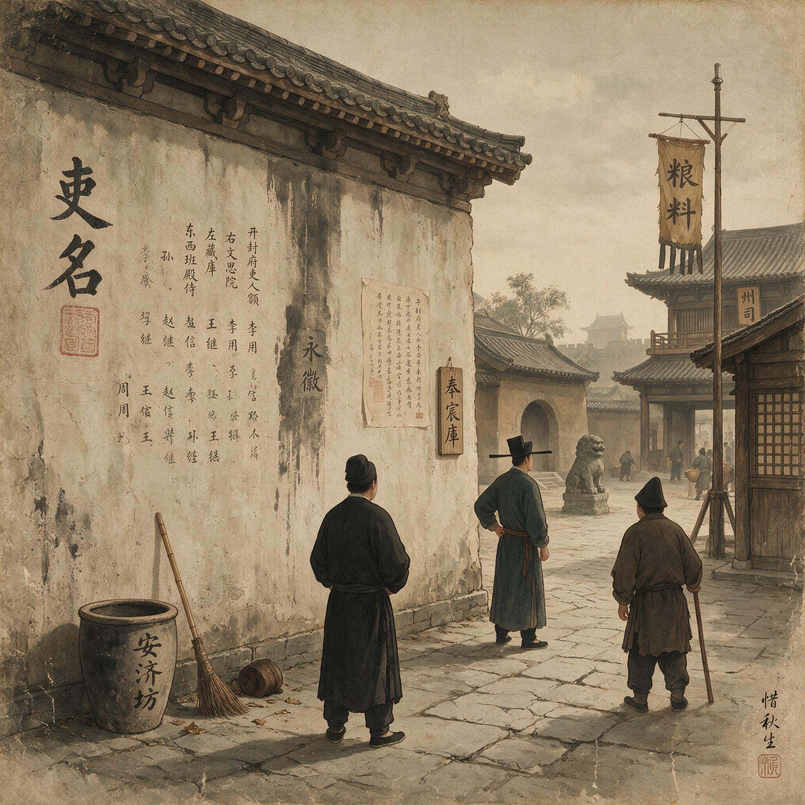

第 18 章
粉壁上的吏名
陈延庆是在卯时三刻知道那件事的。当时他正在竹竿巷的住所里用冷水抹脸。水是头天晚上从院中井里打上来的，带着瓦罐的土腥气。他刚把面巾按在眼窝上，就听见巷口方向传来一阵急促的脚步声。不是官靴踩在石板上的硬响，是布鞋底急速擦过墙根的那种细碎声。接着有人拍门，力道不重，却快，像是一口气憋在喉咙口。门开处，是户房一个年轻贴司。那后生没有进门，只把身子探进半截，嘴唇动了动，又往左右各看了一眼，才压低嗓子说了一句：“东街鸿升茶肆的墙上，有人把您的名字写上了。”
陈延庆把面巾搭在门边，没有立刻应声。那后生又补了一句：“是新刷的粉壁，墨迹未干。”

粉壁上的吏名：历史出版插图
AI 生成插图，非史实影像。
他问：“写的什么？”
贴司低头：“一首诗。”
“什么诗？”
“打油诗。”
陈延庆沉默了一会儿。他转过身，把面巾重新在冷水里浸了一遍，拧干，慢慢擦着后颈。那动作与往日无异，只是手指在颈后多停了一息。
他问那贴司，谁看见的，多少人看见，有人念出来没有。贴司一一答了，说最早是两个进店喝茶的客人瞧见的，后来围了七八个人，再后来有人把诗一字一句念给不识字的人听。念到末句时，人群里还笑出了声。陈延庆没有再问诗的内容。他告诉贴司先去衙里，不要声张，若有人来寻，只说没见着。贴司应了，转身便走。
陈延庆关上门，在照壁前站了片刻。院中天色还灰着，东西两屋的窗纸都暗着。他抬手整了整衣领，又把袖口往下抻了抻，这才推门出去。
从竹竿巷到东街，寻常走法要过两座小桥，再沿河岸一截旧墙根折向北。陈延庆没有走那条路。他拐进一条更窄的里弄，穿过碾坊后门，再从一处晾晒染布的空场边经过。
空场上无人，只有几排深青色的布在晨风里轻轻翻动，像什么活物伏在那里呼吸。他走得不快，也不慢，两脚踩在碎砖地上，一步是一步。
到了东街口，他先看见的是一辆盛满水的驴车。车夫正拿长柄木勺往街面上泼水，水花溅开，带着夜晚积尘的腥气。再往前，鸿升茶肆的檐角已经露出来了。
茶肆门口没有他想象中的那群人。只有两个脚夫模样的汉子站在街对面，身子倚着墙，抄着手，目光同时落在一个方向上。陈延庆顺着那方向看过去，看见了那面墙。墙在茶肆南侧，与邻铺共用，高不过六尺，宽也只比一辆板车略长。
新刷的白灰还透着潮气，几处未干透的地方颜色微青。就在那方白壁上，几行黑墨从齐眉高处写下，字不算好，却整齐，字距紧凑，像是一口气写就的。没有他预想中的淋漓墨迹，也没有丑得夸张的笔法。那字甚至带着几分瘦金味道，像是读过书的人刻意用小楷的架子写了市井的句子。
陈延庆没有走得太近。他站在距离那墙大约一丈远的地方，隔着半条街看。他看到“押录”两个字右下方有一道细长的墨痕，已经淌过了小半寸，在白灰上凝成一条黑线。那正是晨风未吹干之前留下的痕迹。
粉壁在宋代城市中本是常见的公共书写空间，官府告示、店招题壁、文人留诗皆可上墙，但正因其开放，任何过路者都能添上一笔，于是这面墙便成了民间舆论最直接的视觉化媒介。陈延庆深知，这墙上的字一旦出现，便不再属于书写者，也不属于被书写者，而是属于每一个抬头看见它的人。
诗行共有六句，句尾大致押韵，用词粗白，半文半白，有两句直接点名道姓，一句写他“过手三分肥”，一句写他“日进无休日”，末句更甚，将他的名字与“仓鼠”连在一起。
陈延庆又站了一会儿。他感到街上的声音慢慢多起来。隔壁果饼铺的伙计正把蒸笼掀开，一团白汽涌出来，顺着墙根漫开。对街两个脚夫中的一个吐了口唾沫，另一个把脸别过去咳嗽。他们都没有朝陈延庆看，可他们的肩膀都微微朝着那面墙的方向。
陈延庆转身离开，没有进茶肆。他沿来路回去，脚步比来时快了一些。经过那处晾布空场时，一阵风从河上吹来，几匹蓝布猛地扬起，又落下，发出沉闷的拍打声。
他忽然想起那首诗末句里用的一个词。不是“仓鼠”，是另一个。那词在当地市井中并不常用，却出自半部戏文，听来似乎带着某种超出泄愤的意味。
陈延庆没有停下推敲。他知道现在最要紧的不是诗里的用典，而是诗在墙上的位置。鸿升茶肆的门板已经全卸了。头一拨客人坐在靠里两张桌旁，喝茶的喝茶，掰炊饼的掰炊饼，没人大声说话。
只在伙计转过身后，有人用茶碗盖轻轻磕了一下碗沿，旁边人便低低笑出来。那笑声很短，像水面上的一个泡，破了就没了。
日头再高些时，粉壁前的人反而少了。南来北往的行人路过，有几个会朝墙上看一眼，脚步不停。真正停下来的，是刚从菜市出来的妇人和两个替人挑担的少年。一个少年不识字，仰着脸问那妇人：“这写的啥？”妇人没理他，只把篮子往臂弯里紧了紧，抬头飞快地扫了一遍，便低头走了。少年自己站在那里，一个字一个字地看，看了半天，只认出“押录”和“钱”三个字。
大约过了半个时辰，茶肆里出来一个中年男人，五十岁上下，穿一件半旧青色葛衫，手里拿着块湿布。他走到墙前，先左右看看，然后背对着街，抬起手来。湿布落在墙上，白灰立刻洇开一团水痕。他擦的是诗的头两句，动作很快，像是擦自家门板上的泥点。湿布过处，墨迹化成一片灰黑，顺着墙面往下淌。有几滴溅到他鞋面上，他低头看了一眼，没管，继续擦。不到十几息工夫，那几行字便模糊成一片乌云似的印子。
末一句擦到一半时，墙皮被带下一小块，露出底下的黄泥。男人把湿布折了折，转身走回茶肆。
街面上的人这时才多了起来。有人停下来看那面墙，看见的只是一片半干的水渍和几道黑灰的长痕，字已经辨不清了。人们站一站，便走了。
陈延庆没有看见这个场景。他那时已经到了县衙西廊，坐在户房南窗下，正翻一本旧年税账。账是前年的，纸角已经卷了，有几页被虫蛀出细小的孔。他的手指在那些孔上停了一下，没有去抚。同房一个手分从门口经过，朝里看了一眼，没说话。陈延庆也没抬头。
这面墙再次被写上字，是在第二天。那天早上没有下雨。鸿升茶肆的伙计照常卸门板。他刚卸下第一块，单手提着一角，就觉得哪里不对。
他转过头，看见那片昨天被擦过的墙面上，几行新字又出现了。位置比原来略高，字也小了一些，却更清楚。白灰擦了水后有些发灰，新墨写上去便格外显眼。伙计把门板抱在怀里，退了一步，后背撞在另一块门板上，发出一声闷响。这次围过来的人更多。
最先发现的人没有念出声来，只是抬手把旁边一个相熟的茶客往后拉了拉，说：“别站在那儿，沾上。”那茶客先是一愣，随后便笑出来。笑声比昨天大，传得也远。
不多时，半条街的人都晓得那面墙上又有诗了，写得更狠。据后来人们传，那首诗只有四句，句句短，句尾押得更紧。
第一句直接用了陈延庆的姓名，第二句写“酒肉过了肠”，第三句写“簿书翻作鬼”，第四句最毒，不再用“仓鼠”之类，而是将“户房”两个字拆开，嵌进一句俚语里。县城的市井对此并不陌生，那俚语本是用来说某个偷鸡摸狗之人的，如今安在押录头上，竟像是早已备好了一般。陈延庆知道消息时，正坐在户房核对一场夏税折变。他没有听完来人的转述，只问了一句：“茶肆的人擦了没有？”
来人说：“没有。伙计站在门口，谁也没让擦。”
陈延庆点点头，把手里那页纸轻轻折起来，压在砚台下。他起身走到门口，朝院子里看了看。
院中天光明亮，一棵老槐已经开了花，小朵的淡黄落在青砖缝里。他走出西廊，沿着台阶往南，过了仪门，又顺着东墙根往荷塘方向走。塘边有张石凳，他坐上去，把袖口挽起来，像在歇凉。
过了大约一盏茶工夫，他站起来，沿着原路回去。经过茶肆后门时，他看见那个拿湿布的中年男人正蹲在灶前生火。陈延庆认得那是鸿升茶肆的店主，姓钟，在家中排行第五，街坊都叫他钟五。钟五也看见了他，两人的目光碰了一下。钟五先低下头，继续用竹筒吹火。陈延庆没有停步。
他没有再回户房，而是径直去了县衙二堂东面的耳房。那里是县丞平日理事的地方。门半掩着，里面没人。陈延庆在门外站了片刻，转身往更里面的内衙走去。
到了内衙门口，他对一个当值的堂吏说，有桩公事要禀。堂吏进去通报，不一会儿出来，说知县正在见客，请押录稍候。
陈延庆在门外阶下站了半炷香工夫，才被叫进去。知县那日穿了件薄绸直裰，坐在靠窗一张方桌旁，手边摊着几张笺纸。陈延庆进去，行了礼。知县看了他一眼，问：“什么事？”
陈延庆没有提茶肆，只说近日市面有些闲话，恐于县衙声名有碍，特来请知县示下。知县“嗯”了一声，没立刻说话。他端起茶盏，抿了一口，又放下，手指在桌面上轻轻点了两下，才说：“闲话哪里没有。你做好分内事，闲话自然就散了。”
陈延庆说：“若只是闲话，原不该来扰。”
知县笑了一下，那笑极浅，几乎不能算笑。他问：“写了诗了？”
陈延庆没有承认，也没有否认。知县又说：“东街那面墙，年年刷，年年有人写。写什么的都有。你越当回事，它就越像回事。”他顿了顿，语气忽而转轻，“你且说说，你在户房有多少年了？”
陈延庆答：“回明公，十三年了。”
“十三年，”知县重复了一遍，像是想了想这年头的分量，“你能在户房坐十三年，自然知道什么该看，什么不该看。”
陈延庆低下头，没有说话。知县也没有再往下说。堂中静了一瞬，廊外有风吹动竹帘，影子斜在青砖上，一明一暗。知县挥了挥手，说：“去吧。”
陈延庆退出来。他穿过内衙的门，走回西廊。阳光从槐叶间漏下来，在他的袍子上落下细碎的光斑。他走到户房门口，站住了。里面没有人，只有那本旧账还摊在桌上，纸页被窗外的风掀起一角。他走进去，坐下，把账页重新按平。
那天晚上，东街的墙被人涂了。不是用湿布擦，是直接用石灰浆刷。刷的人是谁，没人看清。只知道入夜后，一个戴草帽的男子提着小半桶灰浆走到墙前，用细竹扫把在昨日写过字的地方刷了三道。灰浆厚薄不均，有的地方盖得严实，有的地方透出底下那层灰白的旧底。做得仓促，也不讲究。
第二日早上，人们看见墙上那首诗不见了，只留下几道半干的白痕，像谁用灰浆在墙上画了一扇歪斜的门。陈延庆听说后，没有表态。
可到了午后，情况反而更糟了。有人把一本撕了封面的账册里页贴在了墙上，用的是蒸熟的米粒。纸上用红笔圈出几个数字，又画了只仓鼠伏在铜钱上的样子。仓鼠画得粗糙，尾巴却长，盘成个问号形状。纸页旁边，则用墨字写着“请看第三行”。
第三行是那日擦掉的第二首诗里的句子，被人又单独写了出来，字极大，几乎占了小半面墙。路过的十个人中，有九个人都能看懂，剩下的一个不识字，也会问旁人。那个“第三行”便成了当日茶肆里被提及最多的一句话，茶客们互相转述，又添上些零碎，很快便有了好几个版本。
到了这时，连县衙前门的听差也知道了。几个公差在门房里嚼干粮时说起这事，一个说“写墙上的话不能全信”，另一个就接一句“无风不起浪”。第三个年长些，把手里半块饼往桌上一拍，说：“你们懂什么，那叫官声。”三人都不再言语。
陈延庆从衙里出来时，天色已近黄昏。他原本要回家，却绕了一段路，从北街沿河走到东街。
他先看到那面墙在暮色中泛着暗白，灰浆刷过的痕迹像几条干涸的河床。再看，墙中央那张纸页已经被人撕去半边，剩下的一角还粘在墙上，被风掀起来，又落下去。那“第三行”三个字大得突兀，墨色浓重，像是后来补上去的。几道黑灰的墨迹沿着墙面向下，像从字脚伸出的细长的腿。陈延庆站在河对岸，隔着一片水面看那面墙。
水面上有晚风，吹出细密的波纹。墙的倒影在水中轻轻晃动，那几个字便碎了又合，合了又碎。他没有走近。他看见墙根下有两个半大孩子，正用石子在地上画仓鼠，画完用脚拨散，又画。他们的笑声很轻，断断续续，像被风吹得到处都是。第二天，知县把陈延庆叫到了内衙。这次不是在客堂，是在书房西边的一间小厅。知县没有穿官服，只套了件半旧褙子，头发用一块深色帕子束着。他让陈延庆站着，自己也在窗前来回走了两步。窗下案上摊着几张文稿，旁边是一方已经磨开的墨。“你昨日说市面有闲话，”知县开口，“今天不止市面了。”
陈延庆低着头，没有接话。知县看着他，说：“我不问你诗里写的是真是假。我只问你，你在户房这些年，经手的事，能经得住一张一张翻出来给人看吗？”
陈延庆抬起头。他的目光和知县碰了一下，又垂下去。他说：“明公，户房的事，不是一张一张翻，就能翻清楚的。”
知县等了等，像是在衡量这话的分量。他终于说：“这事再闹下去，对县里没好处。你若是聪明，该知道怎么办。”他顿了半息，“不要用官里的人，也不要再去碰那面墙。”
陈延庆没有问为什么。他施了礼，退出去。他没有看墙，也没有和门口当值的堂吏有目光往来。他沿着正衙的回廊往南走，走到甬道口，忽然停下来，把靴底在阶石上磕了一下，磕掉一小块干泥，这才继续走。
那面墙后来安静了三天。说是安静，其实指没有人再往上写新的字。但墙前并没有真正空过。每天都有人站一站，指一指，隔得远的就看个影子，隔得近的还能认出那“第三行”几笔捺画。有人在茶肆里说，那面墙已经不只是墙了，像是一张当街贴出来的告示，只不过告示用纸，它用白灰。另一个人便接话，说告示有年月，有朱印，这墙上的字，什么都没有，可就是让人记得住。
第三日傍晚，有个外地口音的货郎挑担经过东街，在茶肆要了碗水，靠在门框上休息。他看见对面墙上一行行字痕叠着，旧的被新的盖住，新的又被人擦去，留下许多灰白斑驳、深浅不一的块面。他问旁边人：“这墙上写的什么？”旁人只笑，说：“一个字——名。”货郎不解，还要再问，那人却道：“不用问，这城里的名都在这上面。”
货郎到底没弄明白。可他说的话，却在旁边人心里种下了一点什么。有人当晚说与家中人听，家中人听了，沉默半晌，只说：“何止城里的名。”
县衙那边，陈延庆不再从东街走。他每日进出都走北边的窄巷，过一片染坊后门，再穿过半截旧米市。
那路窄，只容一人过，两边的墙又高，天光只从头顶一线漏下来。走在其中，不辨阴晴。可便是这样，他也躲不开。
有一日午后，他走到旧米市尽头，一个卖蒸饼的老者抬头看了他一眼，随口招呼：“陈押录，好几天没见您了。”那语气极平常，可“陈押录”三个字一出口，旁边两个择菜的妇人都停了手。她们没有抬头，耳朵却都朝着这边。陈延庆应了一声，说：“近来事忙。”脚步没停。他走出去很远，仍觉得那三个字被人在背后轻轻拈着，像从地上又拾了起来。
他忽然觉得，名字从墙上下来以后，就落了地，生了根，走到哪里都有人踩一踩，再交还给他。
那一夜，陈延庆独自在户房里坐到很晚。他没有点灯，只是坐在黑暗中。窗外的槐树簌簌响着，不时有一两片叶子落在窗台上。他手里握着一支用旧了的兔毫笔，没有蘸墨。笔头已经散开，像朵干枯的褐色小花。他用指尖慢慢捋着那些散毛，一下一下，极轻，像怕弄断。
他想，公文上的名字，是可以擦了再写、写了再改的。墨迹落上去，下面总还垫着另一层。
可那面墙不一样。白灰擦了一层，底子还在；灰浆刷了三道，等干透了，那墨还是会慢慢渗出来。这不是谁的字好，也不是谁的墨浓，是白灰有孔隙，墨汁有水性，时间一久，旧的笔画就会从新的涂层下浮起来。你可以再刷一次，再覆一层，可那不过是在旧名字上再加一个旧名字。墙的厚度是有限的，名字却像是活的。
他想起知县那天在书房里说的“不要再去碰那面墙”。这话初听像是叫他撒手，细想却是另一层意思：有些事，你越涂抹，它越清晰。知县不会明说，陈延庆也不会追问。他们都明白，这面墙已经不在任何一个衙门的管辖之下，却比衙门里任何一张牌文都更有力。
牌文是给上面看的，墙是给下面看的。上面看不到的，下面的人用眼睛每日丈量。粉壁上的吏名之所以比谣言更持久，正在于它的物质性：谣言随风而散，而墨迹渗入白灰孔隙，每一次涂刷都只是覆盖而非消除，反而让旧痕在层层叠加中变得更加顽固。这就像胥吏在地方社会中的真实声望，官方考语可以年年粉饰，但民间记忆却如这墙上的字，越擦越深。
后生大约觉得有趣，又抠了几处，那几道黑便连成了半句。四周围着的人大气不出，只看着他。后生抬头看看众人，又低头继续。片刻工夫，半句被白灰盖住的字完整地显出来，正是那“第三行”的开头几个字。众人齐声“哦”了一声，随即有人鼓掌，有人笑骂，有人往后退了一步，像是怕沾上什么。
那一刻，陈延庆其实已经不在城里。他奉差去了城南一处田庄，点查几户诡名寄产的事。田庄离城不过二十余里，却像隔着什么。午后的日头很毒，晒得田埂都发白。他跟着里正走完东边几块水田，又折向西南看一坡旱地。地头几株桑树无精打采地立着，叶子卷了边。里正一路上都在说今年水少、租子难收。陈延庆没怎么接话。他手里拿着一根草棍，偶尔在田土上划两下，划完又踩平。
等到傍晚回城，他从南门入。南门一带是挑夫和车马歇脚的地方，人声嘈杂，尘土飞扬。陈延庆在城门洞下等了一会儿，等一辆牛车过去。那牛车满载干草，草垛高得晃眼。车过后，尘雾腾起来，他抬起袖子挡了一下。
等到尘雾散些，他看见两个兵士在门洞边闲站，其中一个朝他点点头。他没有停步，进了城。
他不走东街，也不走北巷，而是从南门内的小市折向西，穿一片卖鱼卖藕的早市，再沿一条更僻的巷子插向竹竿巷。巷中无人，两旁的墙上生着薄薄的青苔，砖缝里渗出水来，地上有些湿滑。他走得很慢，像是要把一天的风尘都走掉。
到了家，天已经暗了。陈延庆推开门，看见院子里那棵老槐的影子和墙连成一片，墙头草丛里有虫在叫。他在门槛上坐下来，没有点灯。背后的屋里黑着，前面的街上也渐渐静了。
他想起田庄那几块桑树，想起里正说话时不敢看他的眼睛，又想起南门洞里那兵士的点头。点头本是平常的，可那时那地，那一点头，竟像是什么都知道的意思。他忽然想，自己做了十几年户房押录，经手的赋税、簿账、差役、田亩，样样都要和人的名字打交道。哪一块地是谁家的，哪一户欠了多少，哪一户又暗地里多报了几口，他都知道。可这些名字，从来只写在纸上，押在卷里，锁在柜中。
如今，一个名字被写到了墙上，那些纸上的东西便像被风吹散了一般，轻飘飘的，盖不住，也收不回。
夜深了，陈延庆回到屋里。他点亮油灯，从床边一只旧箱子里取出一叠纸。那是他多年来随手留下的私账，上面只有一些极简单的字和数目。他没有去翻，只把它们又放回去。
他想，官面上的考语，他年年都有，字字都好。可那些考语，从头到尾没有一个字会写到墙上。墙上写着的，是另一种考语，没有朱印，没有具结，却日日有人默读，夜夜有人传抄。
它不问你经手过多少文书，只问你过手的每一文钱，沾过多少人的汗，又沾过多少人的骂。你挡不住它，因为墙不归你管；你躲不开它，因为名字不归你管。
这面粉壁由此成了胥吏阶层在地方社会中真实声望的试金石：它将私下流传的谣言转化为公开的、具有持久性的视觉指控，迫使陈延庆直面自身在官方身份与民间评价之间的巨大裂痕。他忽然意识到，自己可以操控案牍、编织网络、压制流言，却无法涂抹掉粉壁上那个被众人指指点点的名字。
它不飘，它就在那里，渗进白灰的孔隙，等着一场雨，或者一只指甲，或者一桶新的灰浆。可新的灰浆下面，还是那个名字。
太阳升到槐树顶上时，陈延庆站起身，整了整衣襟，像要出门。可他没有往县衙方向走。他朝东街去了。这一次，他走得很慢，每一步都踏实。街上的熟人看见他，有的低下头，有的把脸别过去，也有两个朝他行了个不伦不类的礼。他都看见了，没有应声。
到了鸿升茶肆对过，他站住。那面墙正在晨光里，白一块，灰一块，中间几道黑痕像裂纹。墙根下没有人。他看了一会儿，忽然发现那“第三行”几个字上，不知何时被人用指甲划出一道深痕，露出最底层的白灰。那白灰很旧，泛着土黄，像是许多年前第一遍刷上去的。陈延庆眯起眼。他看见那深痕和他记忆中的某个笔画重合起来，像是有人用指甲，把这个名字从最旧的墙上重新挖了出来。
他转过身，走进了茶肆。有茶客抬头，见是他，手里的茶碗停了一下。陈延庆寻了张空桌坐下，对伙计说：“来一碗茶。”伙计迟疑一瞬，还是去了。茶端上来，热汽扑脸。
陈延庆没有喝，只把碗在掌心里转着。他忽然觉得，这茶碗里照出的影子，和墙上的那些笔画一样，都在微微晃动。东街的阳光斜过来，穿过门板缝，切在桌上，把他的手和碗切成明暗两半。他抬起眼，望向门外那面墙。那墙在光里立着，什么也没说。墙上的墨迹已看不太清，只有几道深深浅浅的痕，像一个人走了很远，回头时留在路上的脚印。陈延庆把茶碗轻轻放下。他知道，从今往后，他每走一步，都会有一只眼睛，或是一只手，从墙上下来，跟着他，指给他看。那个名字不在墙上，墙只是它经过的地方。它真正落下的位置，是在每一个认得他的人心里。那是比公文更旧的底账。
陈延庆走出茶肆时，日头已经偏西。他回头望了一眼那面墙，墙上的字痕在斜阳里忽明忽暗，像一张被反复涂改的旧纸。他忽然想起，这面墙最初刷白灰时，或许也曾有人站在这里，看着自己的名字被写上去，又看着它被擦去。粉壁上的吏名，从来不是一个人的事。它是整个胥吏阶层在帝国末梢上的集体镜像：每一个名字的浮现与消隐，都映照着制度缝隙中那些无法被公文记录的生存真相。